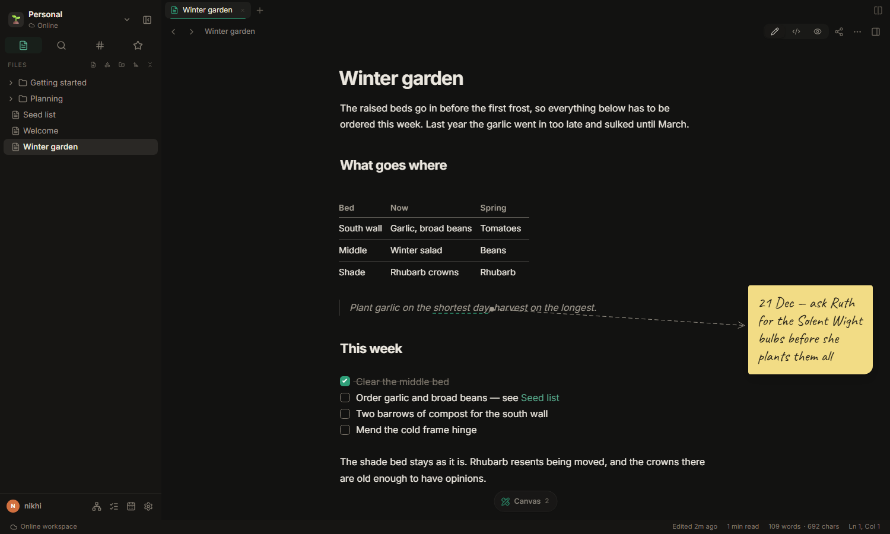

Obi
ObiYour notes are files, not a database.
Obi keeps every note as plain markdown in your own folders — and lets you draw on them: sticky notes, arrows and highlights that stay pinned to the words they belong to, without touching a character of the text.
Runs on this server · Works offline in the desktop app · Your notes stay markdown

Writing that gets out of the way
Markdown, rendered as you type. No preview pane to keep in sync, no proprietary blocks to export out of later.
Plain files, your folders
One note, one .md file. Open the same folder in any other editor; nothing is locked in.
Live preview
Headings, tables, code, maths and diagrams take shape while you write, with the markdown still there underneath.
Links, tags and a graph
Wiki links with backlinks, tags, daily notes, tasks across the whole workspace, and search that keeps up.

A markdown file with ## headings and task lists, seen as a board. Drag a card and the file changes — nothing else does.
A canvas over the page
Drawings are pinned to lines of text, not to pixels — so when you add a paragraph above, the sticky note comes with it.
- Sticky notes, shapes, arrows, freehand pen and highlights
- Arrows that point at a phrase and follow it as you edit
- Markdown blocks on the canvas, with their own live preview
- Whole whiteboards too, on their own or embedded in a note
- Publish a note and the drawings come along, exactly as placed

Alone, or with other people
The same notes, shared as far as you want them to go — and no further.
Live, together
Share a note or a whole workspace. Edits and cursors arrive as they happen, and the file on disk stays plain markdown.
Publish a link
Turn a note into a read-only page that looks exactly like it does here — drawings, tables and all — and updates when you edit.
Version history and trash
Earlier versions are kept as you write, and deleted notes wait in the trash rather than disappearing.
The desktop app works offline
Every workspace is a folder you choose — new, or one that already holds your notes. An Obsidian vault works as it is.
- Write with no connection; it syncs when you're back
- Changes on both sides are merged, and colliding edits keep both copies
- Optional GitHub sync: commit and push on save, on a timer, or by hand
- Edit the same folder in another app; Obi notices

Installers are built from the repository, one per platform: npm run desktop:build.
Self-hosted, by design
One container, one folder of data. Your notes sit on your own disk as markdown; the database only keeps who you are and what you shared.
services:
obi:
image: obi
environment:
APP_SECRET: <a long random string>
PUBLIC_URL: https://notes.example.com
volumes:
- obi-data:/data
ports:
- "3000:3000"
Start with one note
You can move them all out again whenever you like — they were only ever files.